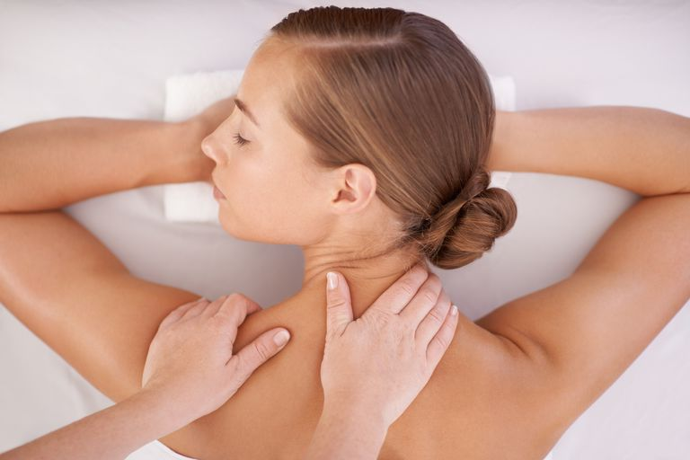

Thai Compress

The Thai Herbal Compress is a Healing Technique from Thailand. It provides an overall sensation of well being. The heat relax's muscles and inflammation. A selection of therapeutic herbs, including, ginger, turmeric and lemongrass, are wrapped in a muslin compress, steamed and then applied to the body in gentle pressing, circular and rolling movements.
Hot Stones Massage

The placement of smooth, heated stones at key points on the body are used to help you relax and ease tense muscles , and help boost circulation.
Swedish Massage
Working swiftly and deeply where you need it most, traditional Swedish massage with pure, nourishing oils boosts circulation and awakens the body from top to toe. Flushing out toxins,keeping ligaments and tendons supple and reducing emotional and physical stress